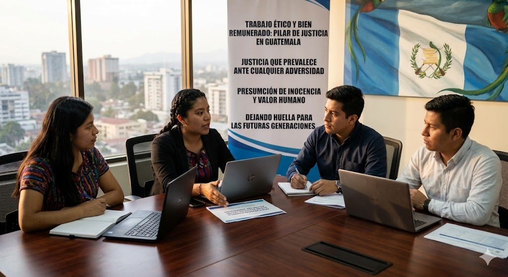

Nuestra Visión
Como grupo, aspiramos a generar un impacto positivo en Guatemala, tomando como base los derechos fundamentales. Nuestro propósito es impulsar un cambio significativo dentro de los ámbitos laboral y judicial, promoviendo una sociedad más justa, ética y equitativa.
Buscamos construir un entorno en el que la justicia prevalezca, evitando que los ciudadanos sean víctimas de abusos. Asimismo, deseamos fortalecer los valores éticos en cada individuo e incentivar una transformación real basada en el respeto, la verdad y el trato digno.
Creemos firmemente que el trabajo ético y justamente remunerado es un pilar fundamental para el desarrollo del país. De igual manera, defendemos el derecho de cada persona a preservar su dignidad, demostrar su inocencia y ser valorada sin ser juzgada por prejuicios o falsos testimonios.
Nuestra visión es dejar una huella positiva en la sociedad guatemalteca, contribuyendo a que las futuras generaciones vivan en un país con mayores oportunidades, igualdad y pleno respeto a los derechos humanos.
Nuestra Misión
Promover el respeto y el cumplimiento de los derechos humanos en Guatemala, fortaleciendo la justicia y la equidad en los ámbitos laboral y judicial. Trabajamos para fomentar una cultura basada en la responsabilidad, la integridad y el respeto mutuo.
Buscamos generar conciencia sobre la importancia de la verdad, la transparencia y el trato digno, impulsando acciones que contribuyan a erradicar las injusticias. Asimismo, promovemos un entorno donde el trabajo sea valorado y justamente remunerado, garantizando condiciones dignas para todos.
Apoyamos la construcción de una sociedad en la que cada individuo pueda defender su dignidad e inocencia sin temor, fortaleciendo la confianza en un sistema más humano, transparente y equitativo.
Con compromiso y responsabilidad, impulsamos un cambio real que beneficie a las generaciones presentes y futuras, consolidando una base sólida de justicia y humanidad en nuestro país.
